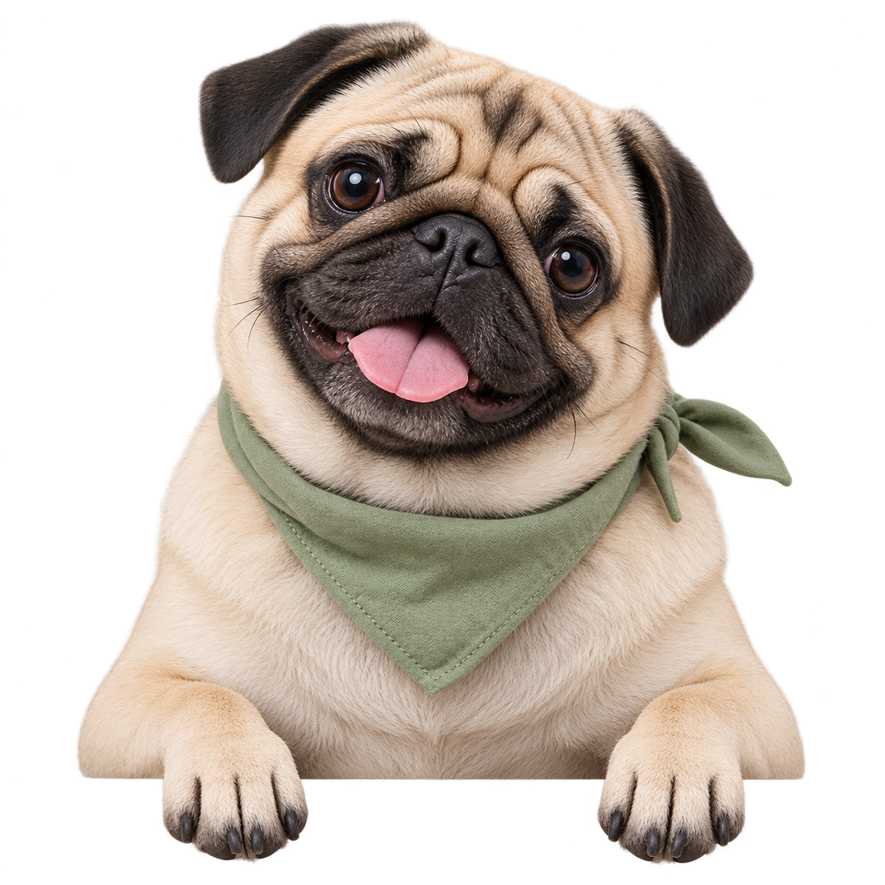
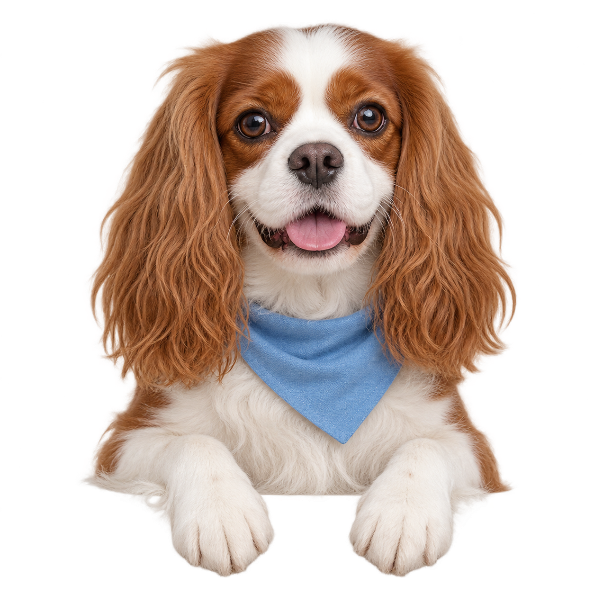
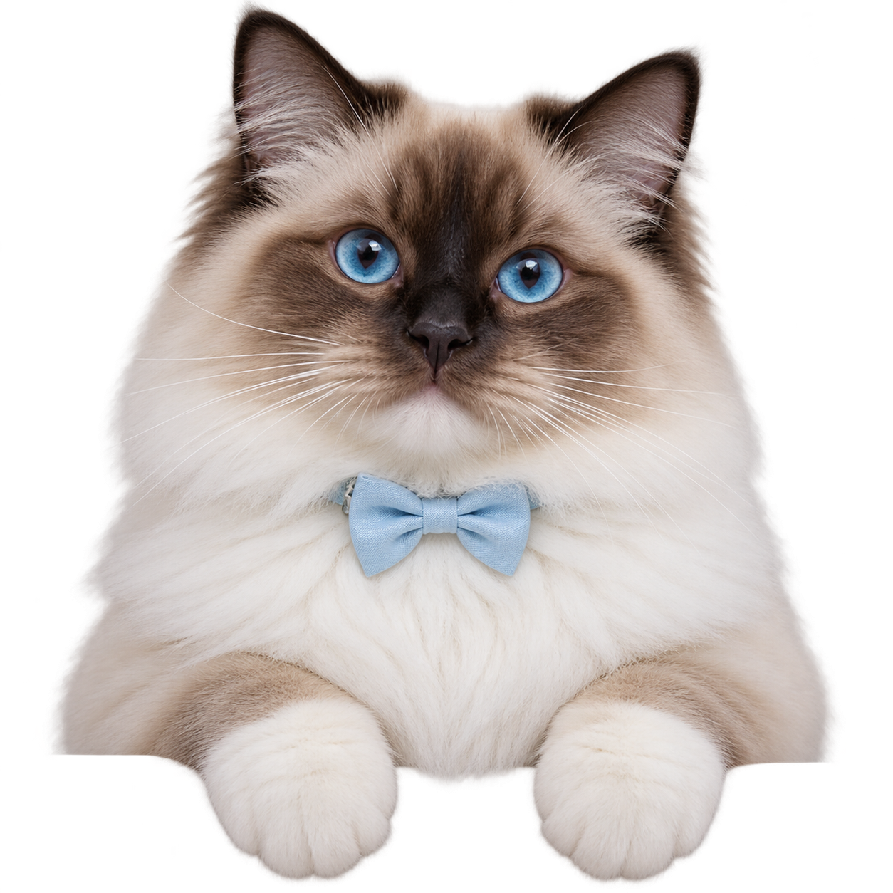
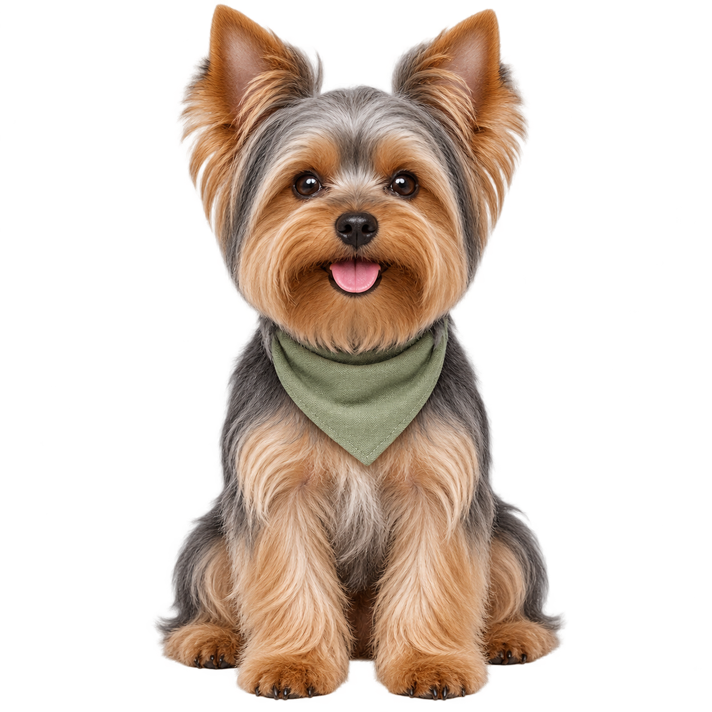

Стрижка
и красота
Комплексный уход для собак
Стрижка для кошек



Центр города
Москва124 оценки
Отзывы гостейКомплексный уход для собак
Стрижка для кошек
Гигиена с помывкой
SPA-комплекс
Вычёсывание колтунов
Уход за полостью рта
Выбрать процедуру и записаться можно по телефону +7 (000) 000-00-00

Уютный зоосалон в центре Москвы. Стрижём, купаем и помогаем заботиться о собаках и кошках.
Стрижка, экспресс-линька, купание, SPA и гигиенический уход. Подберём процедуры для вашего питомца при записи.
По предварительной записи
Парковка и велопарковка
Wi-Fi для гостей
Наличные и банковский перевод
Запись и вопросы об уходе — по телефону.
Пн–пт: 10:00–19:00 · Сб–вс: выходной.